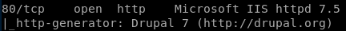
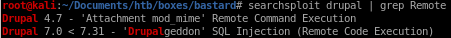
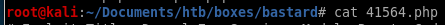
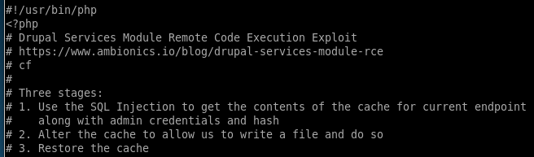

initial foothold
something to note is that the http service is running Drupal, which is a webservice that is widely known for having vulnerabilities associated with some of its versions
remember from our nmap scan that bastard is running Drupal 7
searchsploit drupal | grep Remote


copy
 to our working directory with
to our working directory withsearchsploit -m php/webapps/41564.php

Checking the contents of our exploit


the exploit SQL injects the server to pull admin credentials as well as his cookie and session info for us to steal,
it then alters and then restores the cache